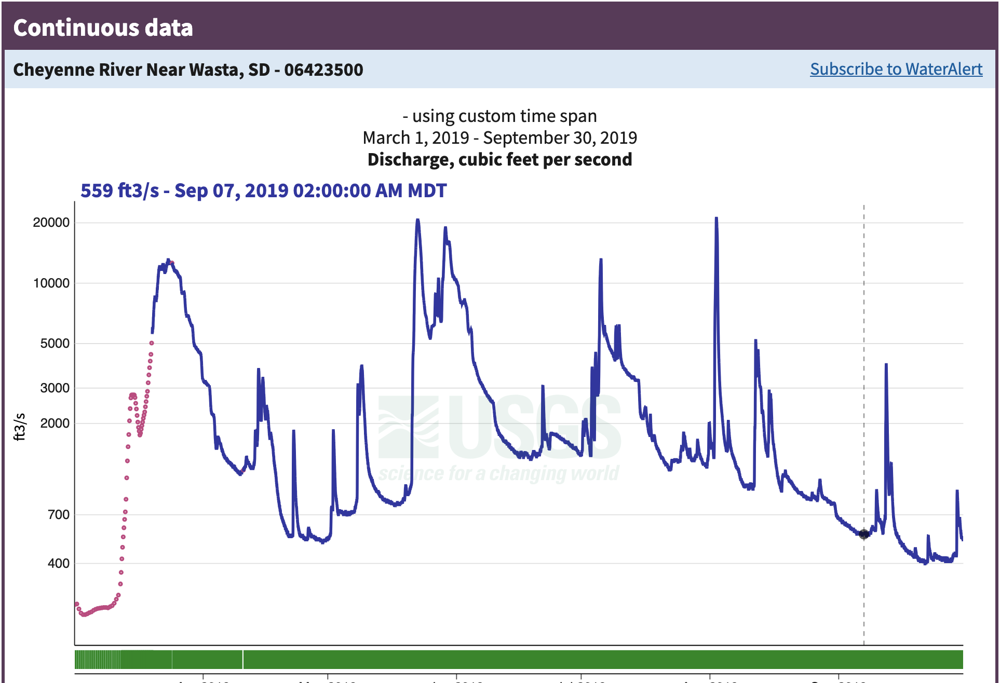

id = 'stars'
site_name = 'Cheyenne River'
year = 2019
data_dir = 'cheyenne-river-flood'
download_title = 'Cheyenne River Flood Frequency'
csv_filename = 'cheyenne_streamflow_1934_2024.csv'Download streamflow data
Using the National Water Information Service
The National Water Information Service
US streamflow data are freely available online from the National Water Information Service (NWIS). These data are collected by the US Geological Survey by comparing the height, or stage of a river or stream with a series of flow measurements.
Using the NWIS data website
Read More
Read more about how the USGS collects streamflow data at the USGS Water Science School site
You’ll start out by previewing the data online so that you can get a feel for what it looks like. Then, you’ll access the data using the dataretrieval Python package maintained by the USGS.
Try It
To preview the data, follow along with the screenshots below to complete these steps:
- Return to the Cheyenne River near Wasta site page.
- Change the dates on the data.
- Try downloading some data with your web browser to see what it looks like
Step 1: Open up the site page
Step 2: Data type
Step 2: Change the plot dates
Step 3: Look at the data

Reflect and Respond
What do you notice about this data? You can think about:
- What type of data is it?
- What dates in 2019 had the worst flooding?
- How unusual were the 2019 floods?
- Does anything about the data seem unusual to you?
Step 4: Look at some raw data
Open up the file you downloaded – it should automatically open in your web browser. Does this look like streamflow data to you?
Read More
Check out the NWIS documentation to find out more about how these data are formatted.
Reflect and Respond
What do you notice about the data? Write down your thoughts on:
- What separator or delimiter does the data use to separate columns?
- What should the data types of each column be?
- Which column contains the streamflow data?
- Do you need to skip any rows that don’t contain data? How can you identify those rows?
- Did you notice anything else?
Data description and citation
Reflect and Respond
Describe your data. Include the following information:
- A 1-2 sentence description of the data
- Data citation
- What are the units?
- What is the time interval for each data point?
- Is there a “no data” value, or a value used to indicate when the sensor was broken or didn’t detect anything? (These are also known as NA, N/A, NaN, nan, or nodata values)
Access the data with code
One way to access data is through an Application Programming Interface, or API. Luckily for us, the USGS has written a Python library to interface with the NWIS API, called dataretrieval. The dataretrieval.nwis submodule has a function or command for downloading stream discharge data from the NWIS!
Try It
Import the dataretrieval library.
If you want to store the data so that you are not dependant on the API to keep working, you will also need the earthpy library for managing local files and the pandas library for loading a csv file. If you are going that route, import the libraries you need, making sure to follow PEP-8 guidelines by keeping your libraries in alphabetical order.
# Import librariesSee our solution!
# Import libraries
import dataretrieval
import earthpy
import pandas as pdNext, we’ll set some parameters. You can use these to customize your workflow.
Try It
The sample code below needs some changes from you before it will run.
- Find the site number on the site page for the Cheyenne River near Wasta gage.
- Determine what date range you would like to download. For right now, start by downloading just the data
- Define variables for the site number, start date, and end date to match the rest of the code. You can find the site number on the site page.
- Download the data using the provided code.
Note that the dataretrieval.nwis.get_discharge_measurements() function returns data in a format called a pandas DataFrame, as well as metadata in a format called a NWIS_metadata. That’s why we need two variables to store the results.
Looking for an Extra Challenge?
Try to write some code:
- Store the data on your computer
- Only download the data if it’s not on the computer already.
- Load the data from your computer.
Water Years
When we look at streamflow data, we usually try to download water years rather than calendar years. The water year in the Northern Hemisphere starts on October 1 of the previous calendar year and runs through September 31. For example, water year 2018 (or WY2018) runs from October 1, 2017 to September 31, 2018.
Why is the water year different? In most of the Northern Hemisphere, the snowpack is as low as it gets around October 1, and begins to build up for the winter at that point. When we’re keeping track of water fluxes, it’s easiest if we don’t need a count on how much water is in the snow pack at the start of the year.
Reflect and Respond
What parameter would you change in the code below if you wanted to switch locations?
# Define download parameters HERE
# Get discharge data and metadata from NWIS
nwis_df, meta = dataretrieval.nwis.get_discharge_measurements(
sites=site_number,
start=start_date,
end=end_date)
nwis_dfSee our solution!
# Define download parameters
site_number = '06423500'
start_date = '1934-10-01'
end_date = '2024-09-30'
# Get discharge data and metadata from NWIS if not already downloaded
project = earthpy.project.Project(dirname=data_dir)
nwis_path = project.project_dir / csv_filename
# NWIS is not reliable -- may take a few tries
while not nwis_path.exists():
try:
nwis_df, meta = dataretrieval.nwis.get_dv(
sites=site_number,
start=start_date,
end=end_date)
nwis_df.to_csv(nwis_path)
except:
continue
# Load from file
nwis_df = pd.read_csv(nwis_path, index_col='datetime', parse_dates=True)
# Display downloaded data
nwis_df
**Final Configuration Loaded:**
{}| site_no | 00060_Mean | 00060_Mean_cd | 00065_Mean | 00065_Mean_cd | |
|---|---|---|---|---|---|
| datetime | |||||
| 1934-10-01 00:00:00+00:00 | 6423500 | 54.0 | A | NaN | NaN |
| 1934-10-02 00:00:00+00:00 | 6423500 | 51.0 | A | NaN | NaN |
| 1934-10-03 00:00:00+00:00 | 6423500 | 51.0 | A | NaN | NaN |
| 1934-10-04 00:00:00+00:00 | 6423500 | 54.0 | A | NaN | NaN |
| 1934-10-05 00:00:00+00:00 | 6423500 | 54.0 | A | NaN | NaN |
| ... | ... | ... | ... | ... | ... |
| 2024-09-26 00:00:00+00:00 | 6423500 | 103.0 | A | 0.44 | A |
| 2024-09-27 00:00:00+00:00 | 6423500 | 94.9 | A | 0.40 | A |
| 2024-09-28 00:00:00+00:00 | 6423500 | 90.7 | A | 0.39 | A |
| 2024-09-29 00:00:00+00:00 | 6423500 | 83.9 | A | 0.36 | A |
| 2024-09-30 00:00:00+00:00 | 6423500 | 73.6 | A, e | NaN | NaN |
32866 rows × 5 columns
Now, let’s check the data:
nwis_df.info()<class 'pandas.core.frame.DataFrame'>
DatetimeIndex: 32866 entries, 1934-10-01 00:00:00+00:00 to 2024-09-30 00:00:00+00:00
Data columns (total 5 columns):
# Column Non-Null Count Dtype
--- ------ -------------- -----
0 site_no 32866 non-null int64
1 00060_Mean 32866 non-null float64
2 00060_Mean_cd 32866 non-null object
3 00065_Mean 1592 non-null float64
4 00065_Mean_cd 1592 non-null object
dtypes: float64(2), int64(1), object(2)
memory usage: 1.5+ MBThe dataretrieval library has taken care of a lot of the work of accessing and importing NWIS data. However, we still want to clean up the data a little, by selecting the column we want and renaming it with a descriptive label. You should also double-check that any NODATA values are properly encoded, and that the data types make sense! For example, plotting a histogram can be a useful way to see if the data values are what you expect.
Reflect and Respond
Do you see any problems with your data? List out three things that you checked to make sure that you won’t have problems down the line.